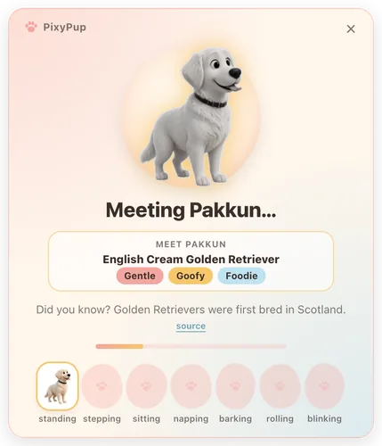
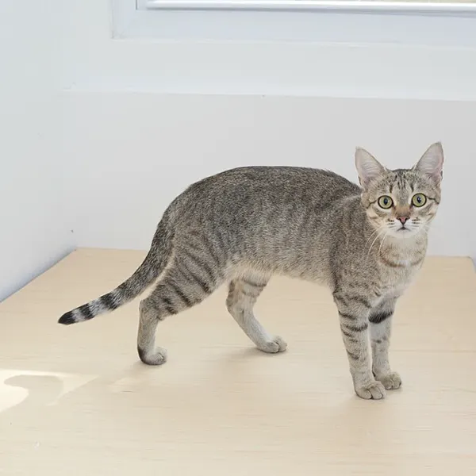
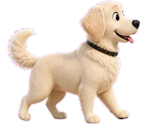
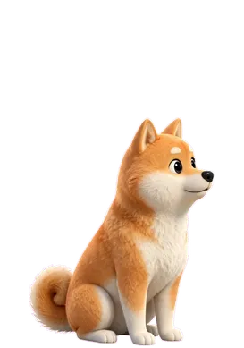
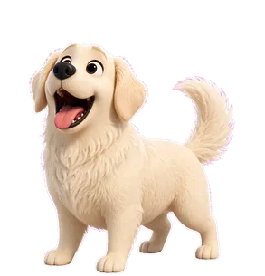
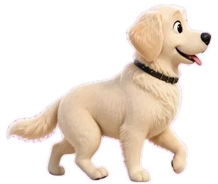
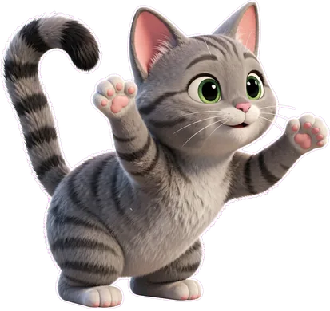
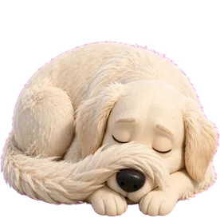
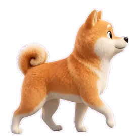
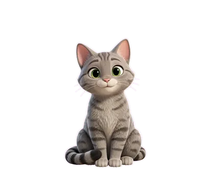

Watch them come alive
SAM 3.1 cuts your pet out and Muse Image draws a matching set of 3D poses. Meanwhile Pakkun learns their breed and quirks, and every pose fills its own bubble as it arrives.

One photo of your dog or cat becomes a 3D companion who walks your desktop and sniffs out failing tests.
~/app $ npm test
No 3D artist, no rigging, about a minute and a half of waiting. Meta's models do the drawing while you watch each pose pop in.

Real source photos by KanaaniStudies and Canarian, CC BY-SA 4.0, via Wikimedia Commons.
SAM 3.1 cuts your pet out and Muse Image draws a matching set of 3D poses. Meanwhile Pakkun learns their breed and quirks, and every pose fills its own bubble as it arrives.

Any photo of your dog or cat, whole body in view. Give them a name. That's the whole form.
The window shrinks to the floor, the old pet trots off, and yours drops in with a happy bounce.


From photo to pet, roughly.
Your own Meta key lives in the macOS Keychain, never in a file.
Pakkun is built in and ready to play.
Turn on "Notice my screen" and Pakkun reacts to what is actually happening. Off by default, of course.
He reads only the front Terminal's text and the list of open windows. Secrets are blanked on your Mac first, and nothing is saved. "Show what Pakkun sees" opens a card with his every decision.

Found a bug!A red line in your Terminal? He runs over, sniffs, and barks a line written by Muse Spark 1.3. Click him for a hint. Make it green and he rolls over and cheers.
A new Dock badge from Slack, Mail, Messages or any app, and his ears go up. You will never miss a ping again (sorry).

Zoom or Meet window open? He tiptoes to the edge of the screen and waits until your call ends. A very professional pup.
Meta Voice Transcribe hears you for up to four seconds, only while you hold ⌥ Space. Try "roll over", "go to bed", "come here" or "bark".
Right-click him, choose "Talk to Pakkun…" and say how your day is going. He answers in woofs, with a small action like leans against you.
Your words go to Meta's model only when you press Send, and nothing is saved. If you mention hurting yourself, nothing is sent: a help card with 988 and findahelpline.com appears instead. This demo is scripted and fully offline.
Tell Pakkun how your day is going.




Open Pet library from any pet's right-click menu and add Mochi or Kuma. They stick around after a restart, and they all join the Overload.
One menu item drops every pet you have, up to 24 of them, across your screen for 25 seconds of chaos. It never takes a click and ends by itself.
Every sense is opt-in and explained first. Screen and voice off, no message sent: zero network calls. Not one.
An hour, or until 8 tomorrow. A snoozed pet does no work at all.
Small, medium or large. Sleepy, normal or playful.
Click-through everywhere but his fur. Optionally hidden from screen shares.
No screen captures or recorded audio, ever. Your key lives in the Keychain.
An admin file can lock screen and voice off for a whole team.
Follows the macOS setting. Calm mode, automatically.
Cuts your pet cleanly out of the photo and tidies every pose.
sam-3.1Draws a consistent set of 3D poses from one photo, plus three candidate walk cycles of eight frames each.
muse-image-1.0Reads the failing line, decides how to react and writes his speech bubble and hints.
muse-spark-1.3Watches the drawn walk cycles and picks the most natural one, so he trots instead of shuffling.
muse-wonder-1.0Turns "Pakkun, sit" into a trick, only while you hold ⌥ Space.
muse-voice-transcribe-1.0Download PixyPup-0.1.0-arm64.dmg and open it.
Drag Pakkun onto Applications. "Drag me home."
First open only: right-click the app, choose Open, then Open again. It's an indie app, not notarised yet.
Or run npm run dist. All releases